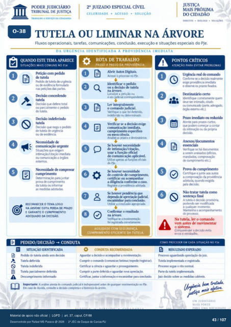

Transcrição automática em português, ainda não revisada. Confira grafia, prazos e termos jurídicos na imagem e no PDF antes de utilizar.
TRABALHO A SERVIÇO DA CIDADANIA
CELERIDADE • ACESSO • SOLUÇÃO
• DIALOGO •
TUTELA OU LIMINAR NA ÁRVORE
Fluxos operacionais. tarefas, comunicações. conclusão, execução e situações especiais do PJe.
DA URGÊNCIA IDENTIFICADA À PROVIDENCIA IMEDIATA
QUANDO ESTE TEMA APARECE
SITUAÇÓES MAIS COMUNS NO PJe
Petição com de tutela
Pedido de tutela urgérria Ou e.'idéncia fcwmulado
nas das partes. Ikcisáo concedendo
tutela (kisào que defere total
ou parcialmente 0 *dicio de tutela.
Ikisáo indeferindo tutela
que nega 0 r»dido de tutela de urgência
ou de eviúlcia Necesidade de
urgente que exigem
ou a órgãos N«essidade de comprwar
cumprimento juntar
prtwa cumvimento da tutela informar
as rnedidas adotadas
RECONHECER O TEMA LCM)
NA ÁRVORE EVITA PERDA DE PRAZO
E GARANTE O CUMPRIMENTO
ADEQUADO DA DECISÃO.
B PEDIDO/DECISÂO CONDUTA
ROTA DE TRABALHO
PASSO A PASSO DA PROVIDÊNCIA
Abrir Autos Digitais. Acesse o prcxesso PJe.
Identificar o •do ou a decisão tutela
Lcxalize a ou 0 ato Judicial
ler integralmente 0 comando judicial.
Verifique 0 foi deferido, indeferido ou determiníKio.
Verificar se a decisão comunicação imediata,
cumprimento eslx•cifico ou rnera ciência.
prazos e destinatários Se houver necessidade
de intimaçáo/citaçào. usar a função oficial
de comunicação aplicável. Utilize ar»nas as funçte-s oficiais
do PJe. Se houver necessidade
de controle de cumprimento, certificar Ou acompanhar
a diligência «)nforrne 0 caso. Registre a providência adotada.
udiaal. encaminhar para conclusão.
Utilize a conclusáo avopriada. Confirmar 0 resultado
na árvore. Verifiqr a mavirnentaçào
fci registrada corretamente.
AGILIDADE COM SEGURANÇA.
CUMPRIMENTO EFICIENTE DA TUTELA.
E SITUAÇÃO IDENTIFICADA
Pedido de tutela ainda sem Tutela deferida
Tutela indeferida Tutela parcialmente deferida
[kscumprirnento informa&)
CONDUTA RECOMENDADA
Aguardar a decisio e xompatúar a Cumpir o comanch (comunicar/intimar/exrrdir/registrar).
a cincia e 0 Cumvir a parte deferida e aguardar runa
Certificar, juntar a e encaminhar para conclusão. Imprtante: A análise atenta ccxnarxio judicial irxiisrznsável antes de qualquer movirrntaçü) no Pk.
Em ca*' dúvida. consulte a &cisáo completa e o histórico da árvore.
PONTOS CRÍTICOS
ATENÇÃO PARA EVITAR PROBLEMAS
Urgência real do comando CCY1firme se a deasào reahente
exige providência imediata e chserve os prazos ftx."8
Destinatário certo Identifiql* corretarnente qlH-n
deve ser intirnado, atido c«rturwacb (parte,
"-gáo externo etc.). Prazo imediato ou reduzido
Atente para yazos curtos, que começar a contar
da intimação Ou da Anexos/dcxumentos
Verifique se há dcxurnentos a anexados (ofick%.
mandad«x. comprovação de curnprimento etc.).
Prova do cumprimento Certifique e junte autos
a da providéncia adotada, quando exigida
Não tratar tutela como sentença final
A tutela e decisão pro.'isória. rxxiendo ser modificada
a qualquer momento Mantenha o
do prcresso Na tutela, o comando
vem antes de movimentar o sistema.
Compreender a evita erros e retrabalho.
COMO PROCEDER EM CADA SITUAÇÀO NO Ple
RESULTADO ESPERAM)
Pr«esso aguardando apreciaçáo juiz. Tutela e
0 rito Parte da tutela
Juiz decide sotre as rnedidas cabiveis. Uhia
UM JUDICIÁRIO
MAIS FORTE
Ver também o infográfico original (página 43)
